Módulo 1. Análisis Estático Lineal#
A continuación, se mostrará el paso a paso del análisis estático lineal. Inicialmente, es importante tener un documento de Excel de entrada con las siguiente información:
Parámetros de entrada#
Información de la estructura
Número de elementos.
Número de nodos.
Grados de libertad totales.
Grados de libertad libres.
Grados restringidos.
Elementos
Id.
Longitud.
\(\theta\) - ángulo del elemento con respecto a las coordenadas globales.
Módulo de elasticidad.
Área.
Segundo momento de área.
Tipo de elemento.
Grados de libertad
Por elemento, definir los grados de liberdad del nodo inicial y nodo final del elemento.
Vector de fuerzas puntuales \((F_{n})\) en los nodos.
Desplazamientos iniciales en los grados de libertad restringidos.
Cargas en los elementos
id elemento
Fuerza distribuida en las direcciones \(x\) y \(y\).
Fuerzas puntuales en el centro del elemento tanto en las direcciones \(x\) y \(y\).
Fuerzas puntuales en los terciones del elemento tanto en las direcciones \(x\) y \(y\).
Fuerzas debido a efectos de temperatura
Fuerzas debido a efectos de preesfuerzo
Información de resortes
Grado de libertad donde se encuentra el resorte.
Rigidez que aporta el resorte.
Procedimiento#
Se realizará el proceso de análisis estático lineal a la siguiente estructura:
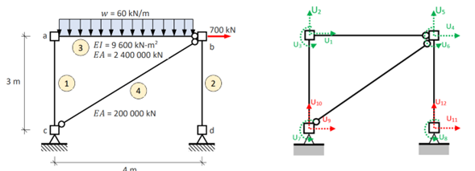
Importación de librerias#
##%% Importación de librerías y funciones creadas
import numpy as np # Librería matricial
import pandas as pd # Librería manipulación de datos
from funciones.funciones import * # Módulo creado con las funciones
Paso 1. Lectura de información inicial#
Se realiza la lectura del archivo de Excel de entrada con la información señalada previamente.
# Definir una función de formato personalizado para la impresión de datos en consola (NO ES NECESARIO COPIAR)
def formato_personalizado(x):
if pd.isna(x): # Manejar NaN
return ''
elif int(x) == x: # Si el número es entero
return '{:.0f}'.format(x)
else: # Si el número tiene decimales
return '{:.7f}'.format(x) # Puedes ajustar el número de decimales aquí
# Aplicar la función a todo el DataFrame
pd.options.display.float_format = formato_personalizado
# Copiar desde acá
# Nombre del Excel de entrada
path_excel = 'estructuras/Entrada2.xlsx'
# Información estructural
informacion_estructural = lectura_informacion(path_excel=path_excel)
display([*informacion_estructural.keys()])
# información general de la estructura
informacion_general = informacion_estructural['I']
# Loop para mirar los dataframes
for hoja in informacion_estructural.keys():
print(f' - Hoja {hoja}')
display(informacion_estructural[hoja])
['I', 'E', 'GDL', 'Fn', 'Ur', 'C', 'R']
- Hoja I
| Dato | Valor | |
|---|---|---|
| 0 | Elementos | 4 |
| 1 | Nodos | 4 |
| 2 | GdLs | 12 |
| 3 | GdLLs | 8 |
| 4 | GdLRs | 4 |
- Hoja E
| Elemento | L | An | E | I | A | T | |
|---|---|---|---|---|---|---|---|
| 0 | 1 | 3 | 90 | 1 | 9600 | 2400000 | 1 |
| 1 | 2 | 3 | 90 | 1 | 9600 | 2400000 | 1 |
| 2 | 3 | 4 | 0 | 1 | 9600 | 2400000 | 3 |
| 3 | 4 | 5 | 36.8698976 | 1 | 9600 | 200000 | 4 |
- Hoja GDL
| Elemento | x_i | y_i | z_i | x_j | y_j | z_j | |
|---|---|---|---|---|---|---|---|
| 0 | 1 | 9 | 10 | 7 | 1 | 2 | 3 |
| 1 | 2 | 11 | 12 | 8 | 4 | 5 | 6 |
| 2 | 3 | 1 | 2 | 3 | 4 | 5 | 6 |
| 3 | 4 | 9 | 10 | 7 | 4 | 5 | 6 |
- Hoja Fn
| GdL | Fn | |
|---|---|---|
| 0 | 4 | 700 |
- Hoja Ur
| GdL | Ur | |
|---|---|---|
| 0 | 9 | 0 |
| 1 | 10 | 0 |
| 2 | 11 | 0 |
| 3 | 12 | 0 |
- Hoja C
| Elemento | wx | wy | f | x | eps_0 | phi_0 | q_01 | fo | e1 | e2 | e3 | |
|---|---|---|---|---|---|---|---|---|---|---|---|---|
| 0 | 1 | 0 | 0 | 0 | 0 | 0 | 0 | 0 | 0 | 0 | 0 | 0 |
| 1 | 2 | 0 | 0 | 0 | 0 | 0 | 0 | 0 | 0 | 0 | 0 | 0 |
| 2 | 3 | 0 | 60 | 0 | 0 | 0 | 0 | 0 | 0 | 0 | 0 | 0 |
| 3 | 4 | 0 | 0 | 0 | 0 | 0 | 0 | 0 | 0 | 0 | 0 | 0 |
- Hoja R
| GdL | Kr |
|---|
Paso 2. Matriz de rigidez de los elementos#
A partir del resumen proporcionado en clase
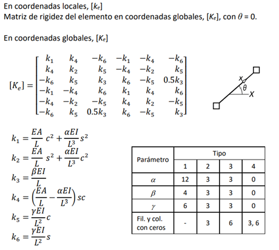
# Información de los elementos
elementos = informacion_estructural['E']
Ke_matrices = {}
matrices_lambda = {}
for elemento in range(len(elementos)):
# Extrae todos la información del elemento
informacion_elemento = elementos.iloc[elemento,:]
# Cálculo de matriz de rigidez elemento
Ke_matrices[elemento] = Ke(elementoTemporal=informacion_elemento)
print(f'Matriz de rigidez elemento {str(elemento)}')
display(pd.DataFrame(Ke_matrices[elemento]))
# Cálculo matriz lambda
matrices_lambda[elemento] = matriz_lambda(theta=informacion_elemento['An'])
print(f'Matriz de transformación lambda elemento {str(elemento)}')
display(pd.DataFrame(matrices_lambda[elemento]))
Matriz de rigidez elemento 0
| 0 | 1 | 2 | 3 | 4 | 5 | |
|---|---|---|---|---|---|---|
| 0 | 4266.6666667 | 0.0000000 | -6400 | -4266.6666667 | -0.0000000 | -6400 |
| 1 | 0.0000000 | 800000 | 0.0000000 | -0.0000000 | -800000 | 0.0000000 |
| 2 | -6400 | 0.0000000 | 12800 | 6400 | -0.0000000 | 6400 |
| 3 | -4266.6666667 | -0.0000000 | 6400 | 4266.6666667 | 0.0000000 | 6400 |
| 4 | -0.0000000 | -800000 | -0.0000000 | 0.0000000 | 800000 | -0.0000000 |
| 5 | -6400 | 0.0000000 | 6400 | 6400 | -0.0000000 | 12800 |
Matriz de transformación lambda elemento 0
| 0 | 1 | 2 | 3 | 4 | 5 | |
|---|---|---|---|---|---|---|
| 0 | 0.0000000 | 1 | 0 | 0 | 0 | 0 |
| 1 | -1 | 0.0000000 | 0 | 0 | 0 | 0 |
| 2 | 0 | 0 | 1 | 0 | 0 | 0 |
| 3 | 0 | 0 | 0 | 0.0000000 | 1 | 0 |
| 4 | 0 | 0 | 0 | -1 | 0.0000000 | 0 |
| 5 | 0 | 0 | 0 | 0 | 0 | 1 |
Matriz de rigidez elemento 1
| 0 | 1 | 2 | 3 | 4 | 5 | |
|---|---|---|---|---|---|---|
| 0 | 4266.6666667 | 0.0000000 | -6400 | -4266.6666667 | -0.0000000 | -6400 |
| 1 | 0.0000000 | 800000 | 0.0000000 | -0.0000000 | -800000 | 0.0000000 |
| 2 | -6400 | 0.0000000 | 12800 | 6400 | -0.0000000 | 6400 |
| 3 | -4266.6666667 | -0.0000000 | 6400 | 4266.6666667 | 0.0000000 | 6400 |
| 4 | -0.0000000 | -800000 | -0.0000000 | 0.0000000 | 800000 | -0.0000000 |
| 5 | -6400 | 0.0000000 | 6400 | 6400 | -0.0000000 | 12800 |
Matriz de transformación lambda elemento 1
| 0 | 1 | 2 | 3 | 4 | 5 | |
|---|---|---|---|---|---|---|
| 0 | 0.0000000 | 1 | 0 | 0 | 0 | 0 |
| 1 | -1 | 0.0000000 | 0 | 0 | 0 | 0 |
| 2 | 0 | 0 | 1 | 0 | 0 | 0 |
| 3 | 0 | 0 | 0 | 0.0000000 | 1 | 0 |
| 4 | 0 | 0 | 0 | -1 | 0.0000000 | 0 |
| 5 | 0 | 0 | 0 | 0 | 0 | 1 |
Matriz de rigidez elemento 2
| 0 | 1 | 2 | 3 | 4 | 5 | |
|---|---|---|---|---|---|---|
| 0 | 600000 | 0 | -0 | -600000 | -0 | 0 |
| 1 | 0 | 450 | 1800 | -0 | -450 | 0 |
| 2 | -0 | 1800 | 7200 | 0 | -1800 | 0 |
| 3 | -600000 | -0 | 0 | 600000 | 0 | 0 |
| 4 | -0 | -450 | -1800 | 0 | 450 | 0 |
| 5 | 0 | 0 | 0 | 0 | 0 | 0 |
Matriz de transformación lambda elemento 2
| 0 | 1 | 2 | 3 | 4 | 5 | |
|---|---|---|---|---|---|---|
| 0 | 1 | 0 | 0 | 0 | 0 | 0 |
| 1 | -0 | 1 | 0 | 0 | 0 | 0 |
| 2 | 0 | 0 | 1 | 0 | 0 | 0 |
| 3 | 0 | 0 | 0 | 1 | 0 | 0 |
| 4 | 0 | 0 | 0 | -0 | 1 | 0 |
| 5 | 0 | 0 | 0 | 0 | 0 | 1 |
Matriz de rigidez elemento 3
| 0 | 1 | 2 | 3 | 4 | 5 | |
|---|---|---|---|---|---|---|
| 0 | 25600.0000000 | 19200 | 0 | -25600.0000000 | -19200 | 0 |
| 1 | 19200 | 14400 | 0 | -19200 | -14400 | 0 |
| 2 | 0 | 0 | 0 | 0 | 0 | 0 |
| 3 | -25600.0000000 | -19200 | 0 | 25600.0000000 | 19200 | 0 |
| 4 | -19200 | -14400 | 0 | 19200 | 14400 | 0 |
| 5 | 0 | 0 | 0 | 0 | 0 | 0 |
Matriz de transformación lambda elemento 3
| 0 | 1 | 2 | 3 | 4 | 5 | |
|---|---|---|---|---|---|---|
| 0 | 0.8000000 | 0.6000000 | 0 | 0 | 0 | 0 |
| 1 | -0.6000000 | 0.8000000 | 0 | 0 | 0 | 0 |
| 2 | 0 | 0 | 1 | 0 | 0 | 0 |
| 3 | 0 | 0 | 0 | 0.8000000 | 0.6000000 | 0 |
| 4 | 0 | 0 | 0 | -0.6000000 | 0.8000000 | 0 |
| 5 | 0 | 0 | 0 | 0 | 0 | 1 |
Paso 3. Matriz de rigidez de la estructura#
# -----------------------------------------------------------------------------------------------
# TODO Paso 3. Matriz de rigidez de la estructura
# -----------------------------------------------------------------------------------------------
# Número de nodos
numero_nodos = informacion_estructural['I'].loc[1,'Valor']
# Inicialización matriz de rigidez
matriz_rigidez_estructura = np.zeros([numero_nodos*3,numero_nodos*3])
# Grados de libertad elemento
GdLs = informacion_estructural['GDL']
for elemento in range(len(elementos)):
# Extrae todos la información del elemento
grados_libertad_elemento = GdLs.iloc[elemento,:].tolist()[1:]
grados_libertad_elemento = [i-1 for i in grados_libertad_elemento ]
# Formación matriz de rigidez de la estructura a partir de las rigideces de los elementos
matriz_rigidez_estructura[np.ix_(grados_libertad_elemento, grados_libertad_elemento)] += Ke_matrices[elemento]
# Información de resortes
resortes = informacion_estructural['R']
if len(resortes)>0:
for resorte in resortes.index:
gdl_resorte = resortes.loc[resorte,'GdL']-1
matriz_rigidez_estructura[gdl_resorte,gdl_resorte] += resortes.loc[resorte,'Kr']
''' Mensaje del notebook - No hay necesidad de copiar'''
print('Matriz de rigidez de la estructura')
display(pd.DataFrame(matriz_rigidez_estructura))
''' Mensaje del notebook - No hay necesidad de copiar'''
# Submatrices k
submatrices_k = division_matrices(GdLs=informacion_general.iloc[3,1],GdLr=informacion_general.iloc[4,1],matriz_rigidez_estructura=matriz_rigidez_estructura)
''' Mensaje del notebook - No hay necesidad de copiar'''
print('Matriz kll')
display(pd.DataFrame(submatrices_k['kll']))
print('Matriz klr')
display(pd.DataFrame(submatrices_k['klr']))
print('Matriz krr')
display(pd.DataFrame(submatrices_k['krr']))
print('Matriz krl')
display(pd.DataFrame(submatrices_k['krl']))
Matriz de rigidez de la estructura
| 0 | 1 | 2 | 3 | 4 | 5 | 6 | 7 | 8 | 9 | 10 | 11 | |
|---|---|---|---|---|---|---|---|---|---|---|---|---|
| 0 | 604266.6666667 | 0.0000000 | 6400 | -600000 | 0 | 0 | 6400 | 0 | -4266.6666667 | -0.0000000 | 0 | 0 |
| 1 | 0.0000000 | 800450 | 1800.0000000 | 0 | -450 | 0 | -0.0000000 | 0 | -0.0000000 | -800000 | 0 | 0 |
| 2 | 6400 | 1800.0000000 | 20000 | 0 | -1800 | 0 | 6400 | 0 | -6400 | 0.0000000 | 0 | 0 |
| 3 | -600000 | 0 | 0 | 629866.6666667 | 19200.0000000 | 6400 | 0 | 6400 | -25600.0000000 | -19200 | -4266.6666667 | -0.0000000 |
| 4 | 0 | -450 | -1800 | 19200.0000000 | 814850 | -0.0000000 | 0 | -0.0000000 | -19200 | -14400 | -0.0000000 | -800000 |
| 5 | 0 | 0 | 0 | 6400 | -0.0000000 | 12800 | 0 | 6400 | 0 | 0 | -6400 | 0.0000000 |
| 6 | 6400 | -0.0000000 | 6400 | 0 | 0 | 0 | 12800 | 0 | -6400 | 0.0000000 | 0 | 0 |
| 7 | 0 | 0 | 0 | 6400 | -0.0000000 | 6400 | 0 | 12800 | 0 | 0 | -6400 | 0.0000000 |
| 8 | -4266.6666667 | -0.0000000 | -6400 | -25600.0000000 | -19200 | 0 | -6400 | 0 | 29866.6666667 | 19200.0000000 | 0 | 0 |
| 9 | -0.0000000 | -800000 | 0.0000000 | -19200 | -14400 | 0 | 0.0000000 | 0 | 19200.0000000 | 814400 | 0 | 0 |
| 10 | 0 | 0 | 0 | -4266.6666667 | -0.0000000 | -6400 | 0 | -6400 | 0 | 0 | 4266.6666667 | 0.0000000 |
| 11 | 0 | 0 | 0 | -0.0000000 | -800000 | 0.0000000 | 0 | 0.0000000 | 0 | 0 | 0.0000000 | 800000 |
Matriz kll
| 0 | 1 | 2 | 3 | 4 | 5 | 6 | 7 | |
|---|---|---|---|---|---|---|---|---|
| 0 | 604266.6666667 | 0.0000000 | 6400 | -600000 | 0 | 0 | 6400 | 0 |
| 1 | 0.0000000 | 800450 | 1800.0000000 | 0 | -450 | 0 | -0.0000000 | 0 |
| 2 | 6400 | 1800.0000000 | 20000 | 0 | -1800 | 0 | 6400 | 0 |
| 3 | -600000 | 0 | 0 | 629866.6666667 | 19200.0000000 | 6400 | 0 | 6400 |
| 4 | 0 | -450 | -1800 | 19200.0000000 | 814850 | -0.0000000 | 0 | -0.0000000 |
| 5 | 0 | 0 | 0 | 6400 | -0.0000000 | 12800 | 0 | 6400 |
| 6 | 6400 | -0.0000000 | 6400 | 0 | 0 | 0 | 12800 | 0 |
| 7 | 0 | 0 | 0 | 6400 | -0.0000000 | 6400 | 0 | 12800 |
Matriz klr
| 0 | 1 | 2 | 3 | |
|---|---|---|---|---|
| 0 | -4266.6666667 | -0.0000000 | 0 | 0 |
| 1 | -0.0000000 | -800000 | 0 | 0 |
| 2 | -6400 | 0.0000000 | 0 | 0 |
| 3 | -25600.0000000 | -19200 | -4266.6666667 | -0.0000000 |
| 4 | -19200 | -14400 | -0.0000000 | -800000 |
| 5 | 0 | 0 | -6400 | 0.0000000 |
| 6 | -6400 | 0.0000000 | 0 | 0 |
| 7 | 0 | 0 | -6400 | 0.0000000 |
Matriz krr
| 0 | 1 | 2 | 3 | |
|---|---|---|---|---|
| 0 | 29866.6666667 | 19200.0000000 | 0 | 0 |
| 1 | 19200.0000000 | 814400 | 0 | 0 |
| 2 | 0 | 0 | 4266.6666667 | 0.0000000 |
| 3 | 0 | 0 | 0.0000000 | 800000 |
Matriz krl
| 0 | 1 | 2 | 3 | 4 | 5 | 6 | 7 | |
|---|---|---|---|---|---|---|---|---|
| 0 | -4266.6666667 | -0.0000000 | -6400 | -25600.0000000 | -19200 | 0 | -6400 | 0 |
| 1 | -0.0000000 | -800000 | 0.0000000 | -19200 | -14400 | 0 | 0.0000000 | 0 |
| 2 | 0 | 0 | 0 | -4266.6666667 | -0.0000000 | -6400 | 0 | -6400 |
| 3 | 0 | 0 | 0 | -0.0000000 | -800000 | 0.0000000 | 0 | 0.0000000 |
Paso 4. Vector de fuerzas#
Importante tener en cuenta el tipo de carga
Cargas sobre elementos
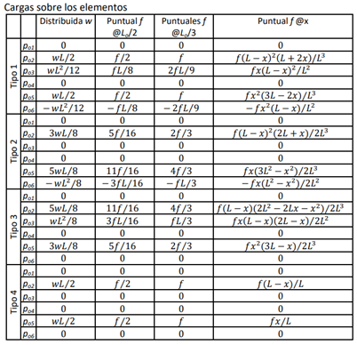
Nuevo enfoque
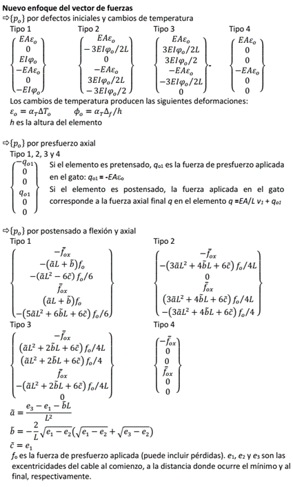
# Cargas elementos
cargas = informacion_estructural['C']
Pos_elementos = {'Po':{},'po':{}}
Fo_estructura = np.zeros([numero_nodos*3,1])
for elemento in range(len(cargas)):
# Extrae todos la información del elemento
informacion_elemento = elementos.iloc[elemento,:]
grados_libertad_elemento = GdLs.iloc[elemento,:].tolist()[1:]
grados_libertad_elemento = [i-1 for i in grados_libertad_elemento ]
matriz_lambda_elemento = matrices_lambda[elemento]
cargas_elemento_temporal = cargas.loc[elemento,:]
tipo_elemento = elementos.loc[elemento,'T']
# ---------------------------------------------------------------
# FUNCIÓN
# - Carga distribuida
# - Cargas puntuales
# - Temperatura
# - Preesfuerzo
Pos_elementos['po'][elemento] = vector_po(cargas=cargas_elemento_temporal,elementoTemporal=informacion_elemento)
print(f'Elemento {elemento}')
display(pd.DataFrame(Pos_elementos['po'][elemento]))
# Transformación a coordenadas globales
Pos_elementos['Po'][elemento] = vector_Po(m_lambda=matriz_lambda_elemento,po=Pos_elementos['po'][elemento])
Fo_estructura[np.ix_(grados_libertad_elemento),:] += Pos_elementos['Po'][elemento]
# ***********************************************************
# Nodos
# ***********************************************************
fuerzas_nodales = informacion_estructural['Fn']
Fn_estructura = np.zeros([numero_nodos*3,1])
if len(fuerzas_nodales) > 0:
for nodo in range(len(fuerzas_nodales)):
Fn_estructura[fuerzas_nodales.loc[nodo,'GdL']-1,:] = fuerzas_nodales.loc[nodo,'Fn']
# Grados de libertad libres
GdLs=informacion_general.iloc[3,1]
F_estructura = Fn_estructura - Fo_estructura
print('Vector Fr')
R_estructura = F_estructura[GdLs:,:]
display(pd.DataFrame(R_estructura))
print('Vector Fl')
F_estructura = F_estructura[:GdLs,:]
display(pd.DataFrame(F_estructura))
Elemento 0
| 0 | |
|---|---|
| 0 | 0 |
| 1 | 0 |
| 2 | 0 |
| 3 | 0 |
| 4 | 0 |
| 5 | 0 |
Elemento 1
| 0 | |
|---|---|
| 0 | 0 |
| 1 | 0 |
| 2 | 0 |
| 3 | 0 |
| 4 | 0 |
| 5 | 0 |
Elemento 2
| 0 | |
|---|---|
| 0 | 0 |
| 1 | 150 |
| 2 | 120 |
| 3 | 0 |
| 4 | 90 |
| 5 | 0 |
Elemento 3
| 0 | |
|---|---|
| 0 | 0 |
| 1 | 0 |
| 2 | 0 |
| 3 | 0 |
| 4 | 0 |
| 5 | 0 |
Vector Fr
| 0 | |
|---|---|
| 0 | 0 |
| 1 | 0 |
| 2 | 0 |
| 3 | 0 |
Vector Fl
| 0 | |
|---|---|
| 0 | 0 |
| 1 | -150 |
| 2 | -120 |
| 3 | 700 |
| 4 | -90 |
| 5 | 0 |
| 6 | 0 |
| 7 | 0 |
Paso 5. Vector de desplazamientos#
# Vector Ur. Con esta función ".values.reshape(-1,1)" estoy transformando el dataframe a un vector de numpy con una columna
Ur = informacion_estructural['Ur'].iloc[:,1].values.reshape(-1,1)
# Inversa Kll
inversa_kll = np.linalg.inv(submatrices_k['kll'])
# Cálculo de Ul
Ul = inversa_kll@(F_estructura - submatrices_k['klr']@Ur)
# Formación del vector U completo (incluye Ull y Ur)
U = np.concatenate((Ul, Ur))
display(pd.DataFrame(U))
| 0 | |
|---|---|
| 0 | 0.0283604 |
| 1 | -0.0001595 |
| 2 | -0.0126141 |
| 3 | 0.0283435 |
| 4 | -0.0008063 |
| 5 | -0.0094478 |
| 6 | -0.0078731 |
| 7 | -0.0094478 |
| 8 | 0 |
| 9 | 0 |
| 10 | 0 |
| 11 | 0 |
Paso 6. Vector de fuerzas internas de los elementos#
P_interna = {}
p_interna = {}
# Grados de libertad elemento de los elementos
GdLs = informacion_estructural['GDL']
for elemento in range(len(cargas)):
# Extrae todos la información del elemento
# Matriz de rigides
Ke_temporal = Ke_matrices[elemento]
# Grados de libertad
grados_libertad_elemento = GdLs.iloc[elemento,:].tolist()[1:]
grados_libertad_elemento = [i-1 for i in grados_libertad_elemento]
# Desplazamientos por elemento
Ue = U[np.ix_(grados_libertad_elemento),:]
# Matriz de transformación
matriz_lambda_elemento = matrices_lambda[elemento]
# P interna en coordenadas globales
P_interna[elemento] = Ke_temporal @ Ue + Pos_elementos['Po'][elemento]
P_interna[elemento] = P_interna[elemento].reshape(-1,1)
# p interna en coordenadas locales
p_interna[elemento] = matriz_lambda_elemento@P_interna[elemento]
p_interna[elemento] = p_interna[elemento].reshape(-1,1)
print(f'Elemento - {elemento}')
display(pd.DataFrame(p_interna[elemento]))
Elemento - 0
| 0 | |
|---|---|
| 0 | 127.5856106 |
| 1 | -10.1141475 |
| 2 | 0 |
| 3 | -127.5856106 |
| 4 | 10.1141475 |
| 5 | -30.3424425 |
Elemento - 1
| 0 | |
|---|---|
| 0 | 645.0000000 |
| 1 | -0.0000000 |
| 2 | -0.0000000 |
| 3 | -645.0000000 |
| 4 | 0.0000000 |
| 5 | -0.0000000 |
Elemento - 2
| 0 | |
|---|---|
| 0 | 10.1141475 |
| 1 | 127.5856106 |
| 2 | 30.3424425 |
| 3 | -10.1141475 |
| 4 | 112.4143894 |
| 5 | 0 |
Elemento - 3
| 0 | |
|---|---|
| 0 | -887.6426844 |
| 1 | 0.0000000 |
| 2 | 0 |
| 3 | 887.6426844 |
| 4 | -0.0000000 |
| 5 | 0 |
Paso 7. Reacciones#
# Reacciones
Rn = submatrices_k['krl']@Ul + submatrices_k['krr']@Ur
print('Reacciones')
display(pd.DataFrame(Rn))
Reacciones
| 0 | |
|---|---|
| 0 | -700.0000000 |
| 1 | -405.0000000 |
| 2 | 0.0000000 |
| 3 | 645.0000000 |
Verificación SAP2000#
La estructura, anteriormente calculada, se modela en SAP2000 considerando las propiedades de la sección y las cargas actuantes:
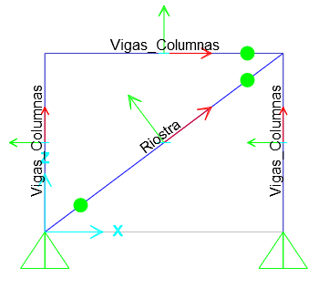 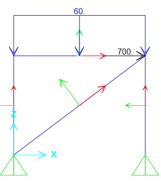
Nota: importante considerar un número grande para el área de cortante.
Reacciones#
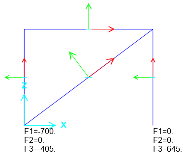
Fuerzas internas elemento 1#
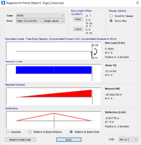 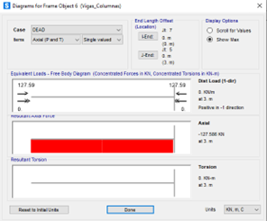
Fuerzas internas elemento 2#
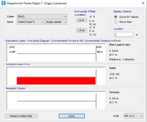
Fuerzas internas elemento 3#
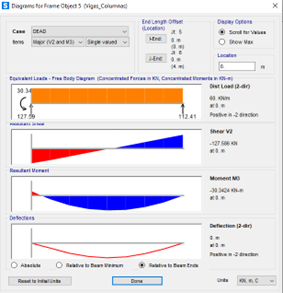 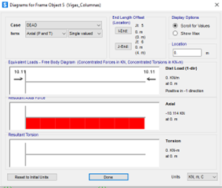
Fuerzas internas elemento 4#
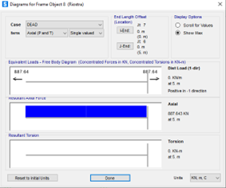